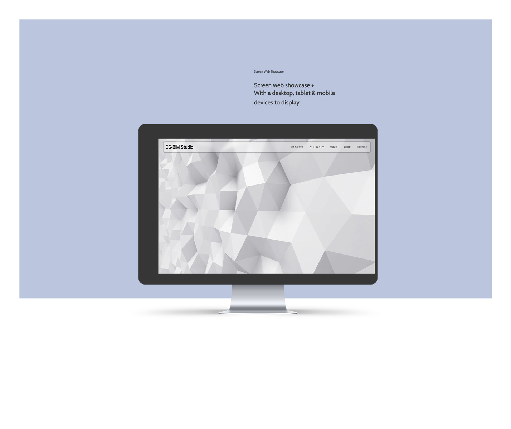

URL
http://kawano2022.starfree.jp/corporate-site_wp/
ポイント
・常に動線を明確にし、BtoBを意識。
・お問い合わせの欄を用途によって２つに作りわけ、ユーザーがより使いやすい工夫を心がけた。
また、郵便番号入れた時に住所が自動で入るプラグイン、メールには自動返信機能をつけ機能を最適化させた。
・企業実績のページにはcssでフィルタリング機能をつけ、必要性に応じて要素を表示させることでレイアウトをすっきりさせた。
・画像を多く使用した為、JPG画像をWebpに変更し、画質の性能を保ったままで通常の半分以下の容量で仕上げることに成功した。
・コンテンツの更新方法によって異なるWordpressの機能を使用。新しいコンテンツをどんどん増やしていく場合は投稿、コンテンツのテキスト内容を定期的に更新したい場合はカスタムフィールドで対応。
・ローカル環境で構築したWordPressをデプロイし、本番環境へ。
制作期間
1ヶ月
使用ツール
php,wordpress,google form